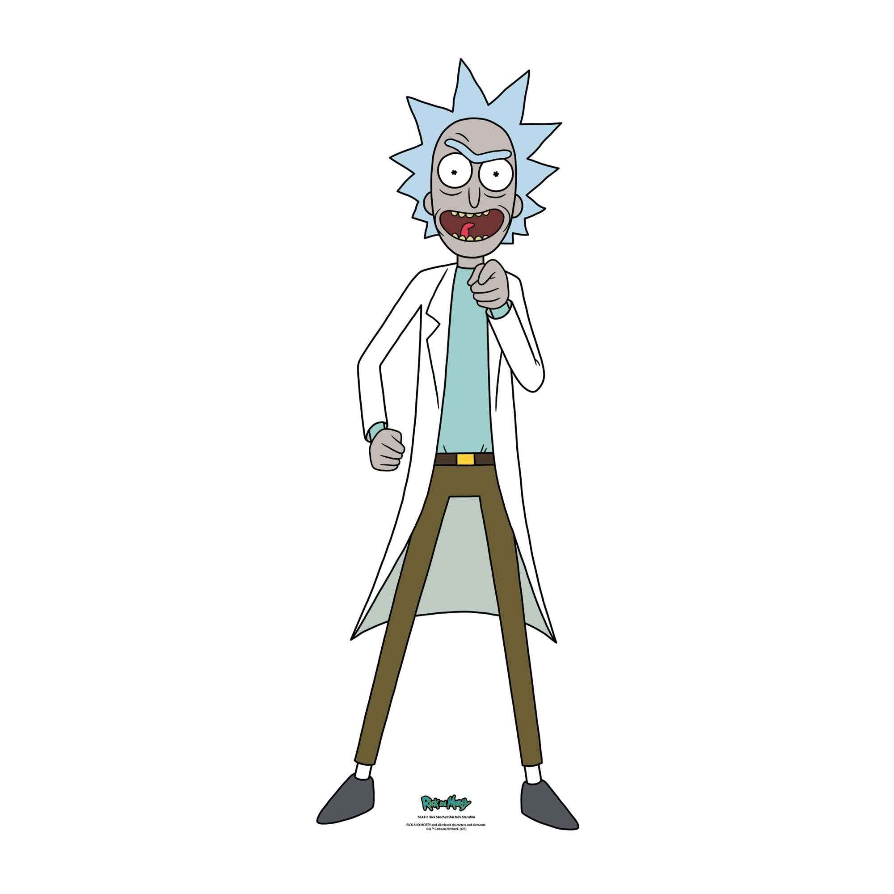
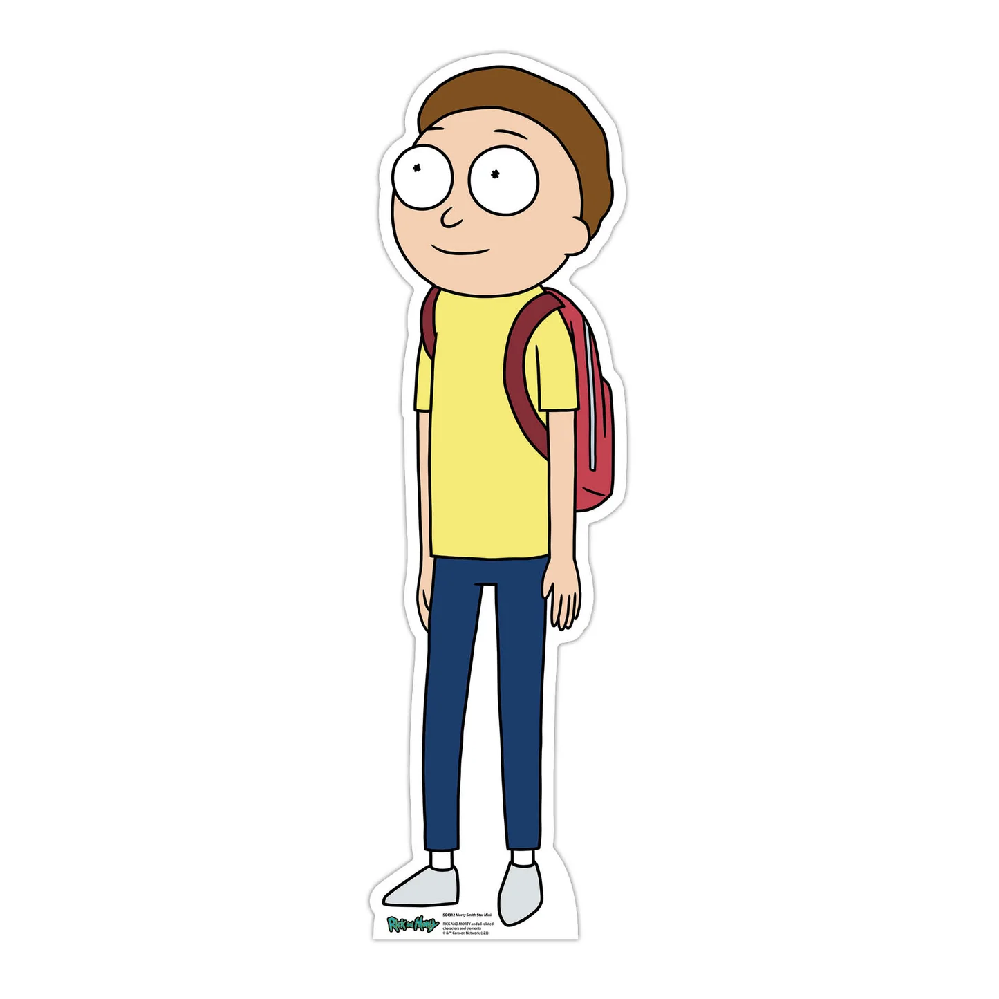
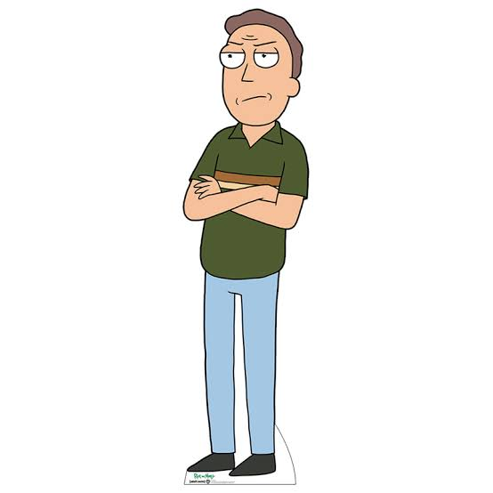

Rick and Morty é uma série de animação adulta norte-americana de comédia e ficção científica criada por Justin Roiland e Dan Harmon para o bloco de programação noturno Adult Swim, exibido no canal Cartoon Network.
A série gira em torno das aventuras dos membros da família Smith, que consiste nos pais Jerry e Beth, seus filhos Summer e Morty, e o pai de Beth, chamado Rick Sanchez, que mora com eles como hóspede.
De acordo com Justin Roiland, a família mora fora da cidade de Seattle, no estado norte-americano de Washington. No entanto, as aventuras de Rick e Morty ocorrem em um número infinito de realidades, com os personagens a viajar para outros planetas e dimensões através de portais, os quais são criados através da Pistola de Portais (Portal gun), e usando o veículo voador do Rick.
 |
 |
 |
||
| Rick Sanchez | Morty Smith | Summer Smith | Beth Smith | Jerry Smith |
Concluindo, "Rick and Morty" é muito mais do que apenas uma série de comédia de ficção científica com um humor negro absurdo e aventuras interdimensionais inconcebíveis, visto que, embora sejam o ritmo acelerado e o lado cómico as primeiras características observáveis, o verdadeiro valor da série encontra-se na forma como explora temas profundos da condição humana.
A série aborda com maestria questões existenciais, como o niilismo (corrente filosófica que questiona ou rejeita a existência de valores absolutos, de verdades universais e de um sentido ou propósito inerente à vida), a solidão, as dinâmicas familiares complexas e o peso das escolhas individuais num universo infinito.
Ao colocar personagens imperfeitas perante a imensidão do cosmos, "Rick and Morty" consegue equilibrar gargalhadas genuínas com momentos de reflexão emocionantes sobre o significado da vida e a importância das ligações que mantemos com quem nos rodeia.
Para quem procura uma história profunda, que diverte ao mesmo tempo que faz pensar sobre a natureza humana, assistir a "Rick and Morty" é uma experiência imperdível.